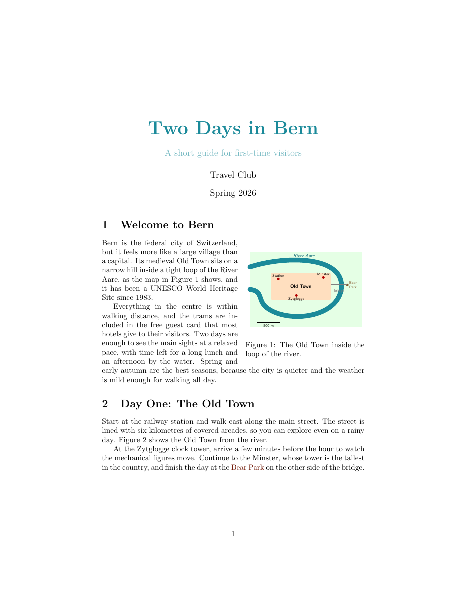
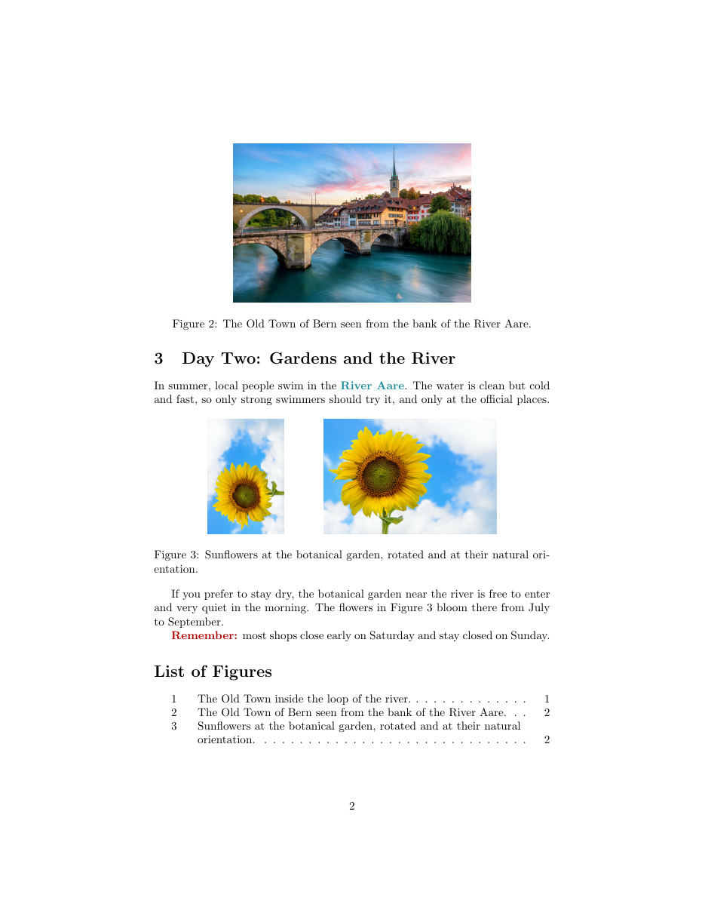

วัตถุประสงค์
เมื่อจบ Workshop นี้ นักศึกษาจะสามารถ
- เรียกใช้แพ็กเกจด้วย
\usepackageและแทรกภาพด้วย\includegraphicsพร้อมกำหนดขนาดและการหมุนได้ - สร้างรูปแบบลอยตัวด้วยสภาพแวดล้อม
figureและอธิบายตัวเลือกตำแหน่ง[htbp]ได้ - ใส่คำบรรยายรูปด้วย
\captionอ้างอิงข้ามด้วย\labelและ\refและสร้างรายการรูปภาพด้วย\listoffiguresได้ - วางภาพให้ข้อความล้อมรอบด้วย
wrapfigureได้ - ใช้สีด้วยแพ็กเกจ
xcolorทั้งสีที่มีชื่อ สีที่นิยามเอง และการผสมสีได้
ไฟล์ที่ได้รับ
ดาวน์โหลด images_colours.zip แล้วแตกไฟล์ไว้ในที่ที่หาง่าย จะได้โฟลเดอร์ images_colours ดังนี้
images_colours/
├── doc.pdf ชิ้นงานต้นแบบ (2 หน้า)
├── warmup.tex ไฟล์สั้น ๆ สำหรับ Part A
├── main.tex ไฟล์เริ่มต้นสำหรับ Part B
├── content.txt เนื้อหาทั้งหมดของ Part B ไม่ต้องพิมพ์ใหม่
├── bern.jpg ภาพถ่าย (JPG)
├── sunflower.jpg ภาพถ่าย (JPG)
└── map.pdf แผนที่ (PDF ภาพแบบเวกเตอร์)ดูไฟล์แยกทีละไฟล์ได้ที่
warmup.tex,
main.tex,
content.txt,
bern.jpg,
sunflower.jpg,
map.pdf
เตรียมเครื่อง
ประมาณ 5 นาทีใช้เครื่องมือชุดเดียวกับ Workshop ก่อนหน้า เปิดโฟลเดอร์ images_colours ใน Sublime Text และเปิดเทอร์มินัลในโฟลเดอร์เดียวกัน
pdflatex หาไฟล์ภาพจากโฟลเดอร์ที่เปิดเทอร์มินัลไว้ ถ้าย้ายไฟล์ .tex ไปที่อื่น ต้องย้ายภาพตามไปด้วย
ภาพที่ใช้กับ pdflatex ได้ ได้แก่ .jpg, .png และ .pdf
\usepackage{...} ในส่วนนำ แพ็กเกจที่ใช้ ได้แก่ graphicx, xcolor และ wrapfig ซึ่งติดตั้งมาพร้อม TeX Live และ MiKTeX แล้ว
และเอกสารที่มี \ref ต้องคอมไพล์ 2 ครั้งเช่นเดียวกับสารบัญ
อุ่นเครื่อง
ประมาณ 35 นาทีใช้ไฟล์ warmup.tex ทำทีละข้อ บันทึก คอมไพล์ และสังเกตผลทุกครั้งที่แก้ไข
- A0 แทนบรรทัด
% A1: put the picture hereด้วย\includegraphics{bern.jpg}แล้วคอมไพล์ เทอร์มินัลจะหยุดและแสดง
พิมพ์ x แล้ว Enter จากนั้นเพิ่ม! Undefined control sequence. l.16 \includegraphics {bern.jpg} ?\usepackage{graphicx}ในส่วนนำ แล้วคอมไพล์อีกครั้งทำไม LaTeX จึงไม่รู้จัก
\includegraphicsก่อนเรียกแพ็กเกจ - A1 ดู PDF และบรรทัดในเทอร์มินัลที่ขึ้นต้นด้วย
Overfull \hbox (697.8375pt too wide)แล้วลองกำหนดขนาดภาพทีละแบบ ได้แก่[width=0.5\textwidth],[height=3cm],[scale=0.2]และ[width=4cm, height=2cm]ภาพที่ไม่กำหนดขนาดมีขนาดเท่าไร แบบใดทำให้ภาพผิดสัดส่วน และทำไมหน่วย
\textwidthจึงสะดวกกว่าcm - A2 ใช้
[width=5cm, angle=45]แล้วเปลี่ยนเป็น[angle=45, width=5cm]ลำดับของตัวเลือกมีผลต่อขนาดสุดท้ายของภาพหรือไม่
- A3 ทำภาพให้เป็นรูปลอยตัว
แล้วลองเปลี่ยน\begin{figure}[htbp] \centering \includegraphics[width=5cm]{bern.jpg} \caption{The Old Town of Bern.} \label{fig:bern} \end{figure}[htbp]เป็น[b]และ[p]รูปย้ายไปอยู่ตรงไหนในแต่ละแบบ ย่อหน้าหลังรูปยังอยู่หลังรูปหรือไม่
- A4 อ้างอิงข้าม เพิ่มประโยค
Figure~\ref{fig:bern} shows Bern.ในย่อหน้าแรก แล้วคอมไพล์ครั้งเดียว
จากนั้นคอมไพล์อีกครั้ง และเพิ่มLaTeX Warning: Reference `fig:bern' on page 1 undefined on input line 23. LaTeX Warning: There were undefined references. LaTeX Warning: Label(s) may have changed. Rerun to get cross-references right.\listoffiguresท้ายเอกสารครั้งแรกเห็นอะไรแทนหมายเลขรูป ข้อความ
Rerunบอกอะไร และทำไม~จึงเหมาะกว่าช่องว่างปกติ - A5 สี เพิ่ม
\usepackage{xcolor}แล้วเปลี่ยนคำว่าRoses are redเป็น{\color{red}Roses are red}จากนั้นทำให้sky is blueเป็นสีblue!60และriver is greenเป็นสีgreen!50!blackตัวเลขหลังเครื่องหมาย
!หมายถึงอะไร - A6 เปลี่ยนเป็น
\usepackage[dvipsnames]{xcolor}แล้วลองสีForestGreenและBrownจากนั้นนิยามสีเองในส่วนนำด้วย\definecolor{aare}{HTML}{1B8A9A}และ\colorlet{lightaare}{aare!40}แล้วนำไปใช้ ลองใส่\pagecolor{yellow!10}ใต้\begin{document}แล้วลบออก - A7 ข้อความล้อมรูป เพิ่ม
\usepackage{wrapfig}แล้ววางภาพmap.pdfไว้ก่อนย่อหน้าแรก\begin{wrapfigure}{r}{5cm} \centering \includegraphics[width=5cm]{map.pdf} \caption{A map of the Old Town.} \end{wrapfigure}เปลี่ยน
{r}เป็น{l}แล้วเกิดอะไรขึ้น ภาพ PDF ต่างจาก JPG อย่างไรเมื่อซูมใกล้ ๆ - A8 ทำให้ผิดโดยตั้งใจ เปลี่ยนชื่อไฟล์ภาพเป็น
bern.png(ไฟล์ที่ไม่มีอยู่จริง) แล้วคอมไพล์! Package pdftex.def Error: File `bern.png' not found: using draft setting. See the pdftex.def package documentation for explanation. Type H <return> for immediate help. ... l.16 \includegraphics[width=5cm]{bern.png} ?ถ้ากด Enter แทน x PDF ที่ได้แสดงอะไรในตำแหน่งของภาพ
แก้ชื่อไฟล์กลับให้ถูกก่อนไปต่อ (หมายเลขบรรทัดของแต่ละคนอาจไม่ตรงกับตัวอย่าง)
[htbp] แต่ละตัวอักษรหมายถึงอะไร
(3) ทำไม \label ต้องอยู่หลัง \caption และ (4) ต้องคอมไพล์กี่ครั้งเมื่อใช้ \ref
งานหลัก
ประมาณ 55 นาทีเปิด main.tex และคัดลอกเนื้อหาจาก content.txt มาวาง เพื่อสร้างคู่มือท่องเที่ยว 2 หน้าให้เหมือน doc.pdf มากที่สุด คอมไพล์ 2 ครั้งด้วย
$ pdflatex main.tex
$ pdflatex main.tex

คำแนะนำ
ใน content.txt ป้ายในวงเล็บเหลี่ยมบอกตำแหน่งและขนาดของรูป สี และรูปแบบตัวอักษร ตารางนี้บอกเฉพาะสิ่งที่ต้องใช้
| ส่วนของชิ้นงาน | สิ่งที่ต้องใช้ |
|---|---|
| ส่วนนำ | graphicx, xcolor พร้อมตัวเลือก dvipsnames, wrapfig, \definecolor (HTML 1B8A9A) และ \colorlet |
| ชื่อเรื่อง 2 บรรทัด | สี ขนาดอักษร และ \\[6pt] ภายใน \title{...} |
| Figure 1 (แผนที่) | wrapfigure ชิดขวา กว้าง 5.5 cm วางก่อนย่อหน้าแรกของหัวข้อ 1 |
| Figure 2 (ภาพเมือง) | figure ตำแหน่ง [htbp], \centering, กว้าง 0.6\textwidth |
| Figure 3 (ดอกทานตะวัน 2 ภาพ) | figure เดียวมีสองภาพ ภาพซ้ายใช้ angle=90 คั่นด้วย \hspace{1cm} |
| Figure 1, 2, 3 ในเนื้อความ | \label และ \ref (ห้ามพิมพ์ตัวเลขเอง) |
| Bear Park, River Aare, Remember | {\color{...}...} ด้วยสี Brown, aare และ red!70!black |
| List of Figures | \listoffigures ท้ายเอกสาร |
คำใบ้เพิ่มเติม (เปิดดูเมื่อติด)
- Figure 2 ในต้นแบบลอยไปอยู่บนสุดของหน้า 2 เพราะหน้า 1 ไม่มีที่ว่างพอ ไม่ต้องบังคับให้อยู่หน้า 1
- ถ้าข้อความล้อมรูปยังบีบหัวข้อถัดไป ให้ตรวจว่าวาง
wrapfigureไว้ก่อนย่อหน้าแรก ไม่ใช่กลางย่อหน้า - ชื่อสีในชุด
dvipsnamesขึ้นต้นด้วยตัวพิมพ์ใหญ่ เช่นBrownไม่ใช่brownซึ่งเป็นสีพื้นฐานอีกสีหนึ่ง - ถ้าเห็น
??แทนหมายเลขรูป ให้คอมไพล์อีกครั้ง
ส่งงาน
เปลี่ยนชื่อไฟล์เป็น images_colours_<รหัสนักศึกษา>.tex แล้วคอมไพล์ใหม่ 2 ครั้งด้วยชื่อนั้น ส่งทั้งไฟล์ .tex และ .pdf (ไม่ต้องส่งไฟล์ภาพ)
รายการตรวจสอบก่อนส่ง
ท้าทาย
ไม่บังคับ · ประมาณ 20–30 นาทีทำเพิ่มในไฟล์ใหม่ (คัดลอกจากงาน Part B) ข้อใดก็ได้
- C1 ย้ายไฟล์ภาพทั้งหมดไปไว้ในโฟลเดอร์ย่อย
images/แล้วใช้\graphicspath{{./images/}}ในส่วนนำ โดยไม่แก้คำสั่ง\includegraphics - C2 ใส่
[h]แทน[htbp]ใน Figure 2LaTeX ทำตามได้หรือไม่ มีคำเตือนอะไรในเทอร์มินัล และเหตุใดการให้ตัวเลือกหลายตัวจึงปลอดภัยกว่า
- C3 นิยามสีด้วยรูปแบบสีอื่นอีก 2 แบบ ได้แก่
{rgb}{0.11,0.54,0.6}และ{RGB}{27,138,154}ทั้งสามแบบให้สีเดียวกันหรือไม่ เพราะอะไร
- C4 ทำโปสเตอร์ 1 หน้าแนะนำสถานที่ในมหาวิทยาลัย ใช้ภาพถ่ายของตัวเองอย่างน้อย 2 ภาพ สีที่นิยามเอง และข้อความล้อมรูป
ข้อผิดพลาดที่พบบ่อย
| อาการ | สาเหตุและวิธีแก้ |
|---|---|
! Undefined control sequence. ที่ \includegraphics |
ยังไม่ได้ \usepackage{graphicx} |
! Undefined control sequence. ที่ \color หรือ \definecolor |
ยังไม่ได้ \usepackage{xcolor} |
! Package pdftex.def Error: File `...' not found |
ชื่อไฟล์หรือนามสกุลไม่ตรง (เช่น .JPG กับ .jpg) หรือภาพไม่ได้อยู่ในโฟลเดอร์เดียวกับไฟล์ .tex |
! LaTeX Error: Environment wrapfigure undefined. |
ยังไม่ได้ \usepackage{wrapfig} |
! Package xcolor Error: Undefined color `Brown'. |
ลืมตัวเลือก dvipsnames หรือสะกดชื่อสีผิด |
Overfull \hbox (...pt too wide) และภาพล้นขอบ |
ภาพใหญ่กว่าความกว้างข้อความ กำหนด width ไม่เกิน \textwidth |
เห็น ?? แทนหมายเลขรูป |
คอมไพล์อีกครั้ง ถ้ายังเห็นอยู่ แปลว่าชื่อใน \ref ไม่ตรงกับ \label |
| หมายเลขรูปผิด (ได้หมายเลขของหัวข้อ) | วาง \label ไว้ก่อน \caption ต้องวางหลัง |
| รูปไม่อยู่ตรงที่เขียนไว้ | เป็นธรรมชาติของรูปลอยตัว LaTeX เลือกตำแหน่งที่เหมาะที่สุดตาม [htbp] ให้อ้างถึงรูปด้วย \ref แทนคำว่า "รูปด้านล่าง" |
แหล่งอ้างอิง
- สไลด์บทเรียน Figures and Tables ส่วน Basic Graphics, Coloring, Figures และ Cross-References
- The Not So Short Introduction to LaTeX (เปิดด้วย
texdoc lshort) หัวข้อ 2.12 Including Graphics and Images และ 2.13 Floating Bodies